基于 8月14日 44 分钟腾讯会议演示录屏（逐帧 + 全程转写）、34 页产品手册、官网后台实况，对心动做一次六段收口的完整拆解。本页第一次拿到了三样以前没有的东西：公司主体线索、真实技术底座、算力二次收费口径。
配图版说明：全文补入 13 张实拍图——官网后台是抓取当天的真实页面，演示画面来自录屏抽帧，均未做美化。 补图过程中又拿到三条新证据，已就地订正正文：加微频控的真实默认值（图 2）、CDK 是长期有效不是买断（图 11）、 视频生成用的是字节 Seedance 模型（图 13）。
心动卖的不是软件，是一台被上了发条的红米手机。你花 5,800 买回来放在桌上，插着电连着网，它自己一天到晚在抖音、小红书、视频号、快手、微信里点来点去，替你找客户、发私信、加好友。
本次演示最重要的三条新信息
adb、scrcpy复制版、手机root 三个文件夹——这是安卓自动化最基础的三件套，说明这套东西的本质是"用调试通道遥控一台真手机"，不是什么自研黑科技。按 08-14 机制页的固定六段填。这一页把机制页里心动那一行的"待补"全部填上了，只剩一处仍需实测。
实证后台"AI 终端管理中枢"里那台设备写得清清楚楚：Redmi Note 13 5G，SDK Android 13；投屏窗口标题是机型代号 2312DRAABC，正是 Redmi Note 13 的官方型号串。
口径销售说"目前只支持小米 Note 13、14、15 系列，苹果没有"。手机他们按 1,000–1,200 元采购，市场价 1,300–1,400，配好系统再连软件一起 5,800 卖给你。
一台手机 = 一个员工，扩量只能加手机。演示账号上"当前设备：1"，人设卡片上写"正在控制 1 部手机"。
实证手机上装了三个心动自己的 App：AI获客 / AI销售 / AI实验室，和微信、抖音、小红书、快手并排放在桌面上。任务从微信小程序下发到这台手机，手机自己在本机操作那些 App。
口径销售原话："我们是做 RPA，就是模拟真人的一个合规技术，不是黑客技术。"——即不碰协议、不改客户端，就是在屏幕上模拟人手点。
推断0.80结合桌面上的 adb / scrcpy / root 工具，实现路径几乎可以确定是安卓无障碍服务（辅助功能）驱动的界面自动化，装机阶段用 adb 授权、必要时 root。详见第 02 节。
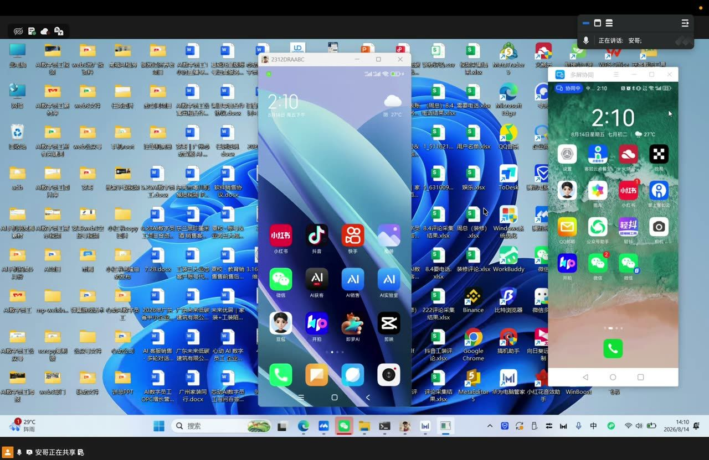
口径不需要连电脑。销售："AI 手机放在那里就可以了，有电有网就 OK。"
实证 · 本次最该记的一条被直接问到"手机跑起来我还能不能用"时，销售答："对，那没办法使用。他要工作的时候你不能去打断，就像一个人，你想看抖音他想看小红书，一个手机上只能打开一个。"
所以这台机器是独占的、亮屏的、不能兼作日常机的。饭姐机制页里"亮屏要求待补"这一格，可以填了。
建人设（个人 IP / 本地商家 / 企业服务三选一，可 AI 生成）→ 系统按行业自动生成一张 24 小时工作流（可逐条改时间、可关、可删）→ 上传素材（图片、视频、出镜人形象）→ 手机上点"开启工作"。
文案不用管，系统每天 00:00–03:00 自己去抓爆款改写；人只需要喂素材。销售："我们要做的工作就是把素材发上去就可以了，文案这些都不需要。"
聊到成交阶段触发关键词会自动拉 VIP 群，这时要人工接手。
实证任务流按时段串行排队，一个时段只干一件事：08:30 视频发布 → 09:00 私信接管 → 09:30 视频号获客 → 10:00 自动加好友 → 10:10 截流私信 → 10:30 留痕获客 → 11:00 私信……颗粒度 10–30 分钟一段。
实证频控做在"自动获客"配置页里：每个匹配词截流上限 = 10（可加减）。这是目前唯一拿到的它的真实阀值控件。
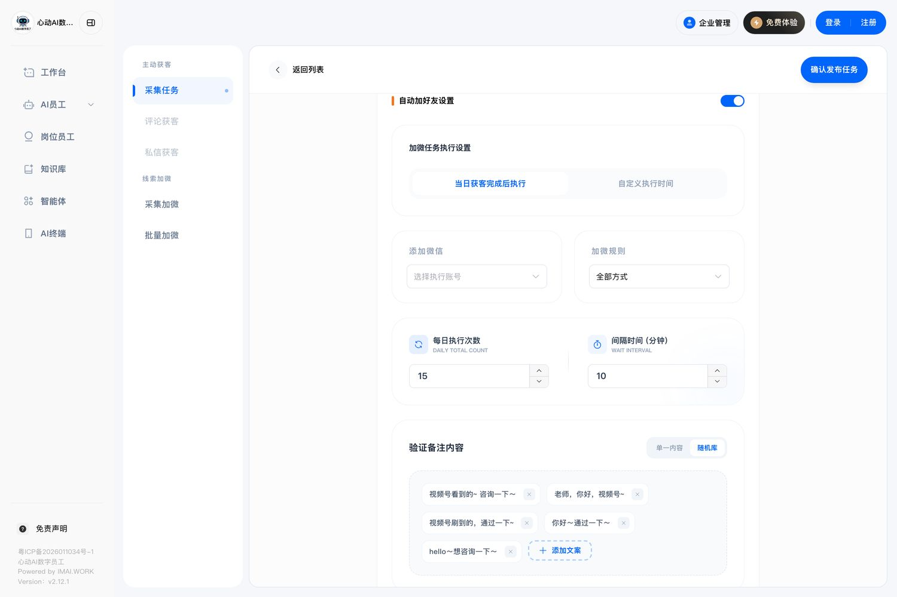
口径客服回复速度："发过来之后停留几秒钟就过去了"；也可以设成"隔一段时间统一回"。
口径关于阀值："这个就是一个阀值，你不能太过了，太过了平台肯定有规则。"——承认了量是要压的，但没给出每天上限的具体数字。
实证销售现场跑了一次"视频号获客"：手机自动打开微信 → 进"发现" → 在搜一搜里输入关键词（"猎星出海国际贸易广东"、"餐饮店"）→ 翻商家视频号 → 采集主页信息。悬浮窗常驻"AI 工作中 00:0X:XX"计时器。
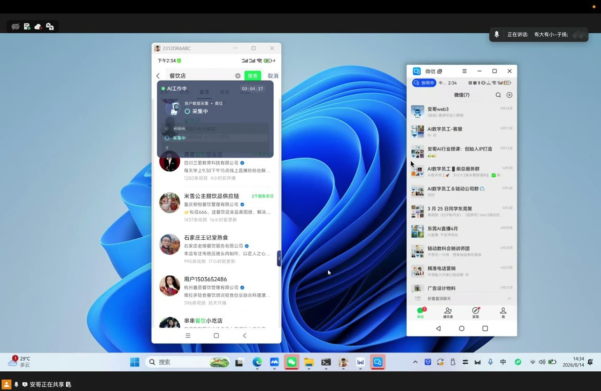
实证另外，整场 44 分钟里，手机端 AI 获客主程序始终显示"已关闭"——小程序里那些"立即演示"按钮放的是动效，不是真跑。
桌面上并排放着这三个文件夹 实证0.95
| 文件夹名 | 是什么（大白话） | 说明了什么 |
|---|---|---|
| adb | 安卓调试桥，电脑给手机下命令的官方通道 | 装机、授权、抓日志都靠它。说明交付时要把手机接上电脑做一轮配置 |
| scrcpy复制版 | 开源投屏工具，把手机画面搬到电脑上并能反向控制 | 演示里那个标题写着 2312DRAABC 的窗口就是它——不是自研，是免费开源软件 |
| 手机root | 把手机的最高权限打开 | 安卓上要绕过限制做深度自动化，root 是最常见的路子。这一条直接关系到保修和安全 |
旁边还有 小红书克隆自动发布、安卓root、web3发广放资料、安哥web3空投号视频、web3部门——同一套多开/自动化技术栈，他们还拿去做币圈空投撸号。
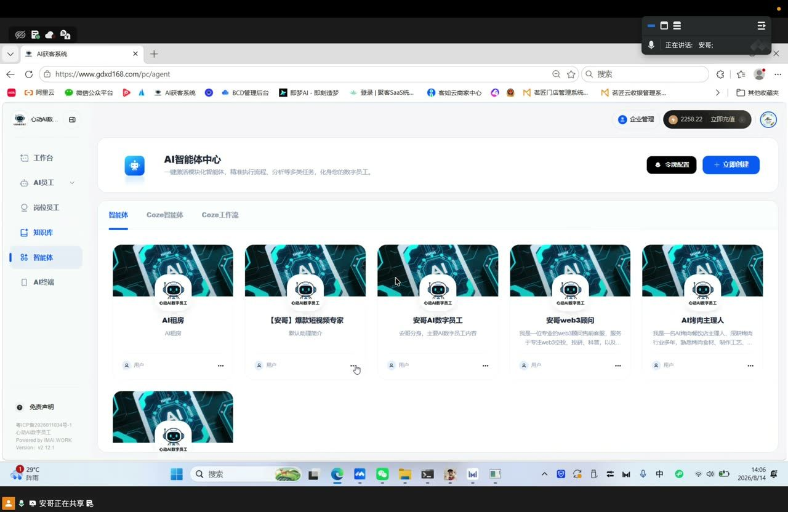
打个比方：它不是给微信装了个外挂，而是给手机雇了一只看不见的手。这只手能看见屏幕上有什么（读控件），也能按下去（模拟点击），于是它能像人一样打开微信、点"发现"、输关键词、翻页、把看到的手机号抄下来。
这在安卓上有个标准做法叫无障碍服务——本来是给视障用户设计的功能，让程序能读屏幕、代替手指点。国内几乎所有"手机自动化获客"产品都走这条路。推断0.80
这条路线的两个致命软肋（对采购的直接含义）
| 路线 | 代表 | 谁在动手 | 风险落在谁头上 | 扩一倍要花什么 |
|---|---|---|---|---|
| 本机 GUI 自动化 | 心动 | 那台专用手机自己 | 你的平台账号 | 再买一台 5,800 的手机 |
| 电脑端 RPA | 水流 / 智巨人 / 鲲炬 | 你的电脑（占鼠标键盘） | 你的平台账号 | 再占一台常开电脑 |
| 电脑指挥真机阵列 | 知了 | 一台电脑带 5 台手机 | 你的平台账号 | 加手机 + 加带机位 |
| 定制 ROM 工作手机 | 亿销云 | 不碰公域，只在系统层看 | 几乎没有（不闯平台） | 加人头席位 |
| 官方通道 | 今立（自称） | 平台接口 | 号称归平台 | 加授权数 |
| 云电脑 + 真机混合 | 我们 | 云电脑 + iPhone，人机混合 | 可降级人工兜底 | 加云电脑（¥199–249/年） |
手册只画了小程序那一层。演示暴露出它其实是"网页后台 + 小程序 + 手机 App"三层结构，而且网页后台那层做得比手册宣传的重得多。
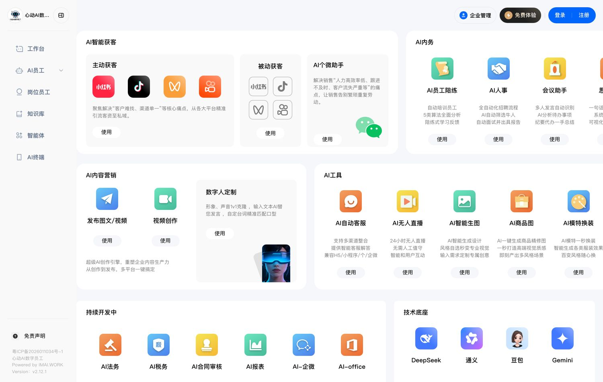
第一层 · 网页后台 gdxd168.com/pc
一级菜单六项：工作台 / AI员工 / 岗位员工 / 知识库 / 智能体 / AI终端。
AI员工下面还有五个：AI获客、AI销售、数字人、矩阵任务、AI内务（会议助手、会议记录、岗位列表、面试记录、员工陪练、思维导图、无人直播）。
销售说这层"平常比较少打开，主要用来搭知识库和智能体"——但 AI销售那一块其实藏着一整套微信 SOP 管理。
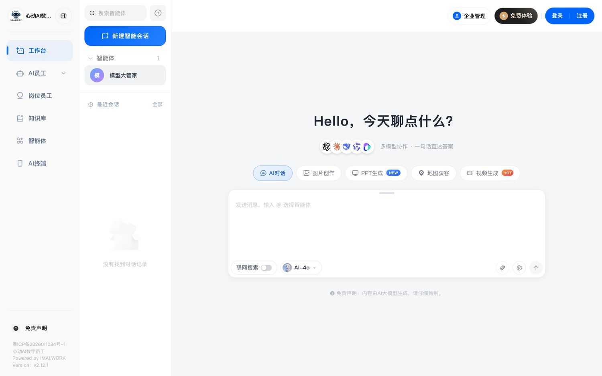
第二层 · 微信小程序「心动AI」
底部四个 tab：AI手机 / AI助手 / AI创作 / 我的。日常操作全在这里。
AI手机页顶部四入口：任务日历 / 数据报表 / 客资线索 / 客户案例。任务不再按时间排，而是按目标分成四条"AI 自动干活流水线"：①帮我找爆款内容 ②全网自动发布 ③同行找客户 ④聊客户加微信。
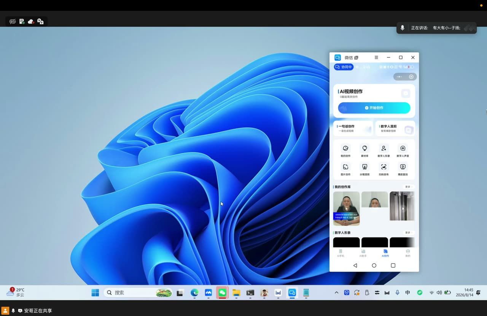
第三层 · 手机上的三个 App
AI获客 · AI销售 · AI实验室，和微信抖音并排。
同一台机器上还装着豆包、开拍、即梦AI、剪映——四个第三方工具。这说明它的一部分内容能力是拼装来的，不全是自研。
实证 · 补测这条推断已被官网坐实：官网自己写着"技术底座：DeepSeek / 通义 / 豆包 / Gemini"，视频生成模型是字节的 seedance1.0-pro。见图 5、图 13。
AI销售 = 一套完整的个微 SOP 台 实证
二级菜单：聊天室 / 设备列表 / 微信列表 / SOP任务 · 自动SOP · SOP流程 · SOP看板 / 朋友圈 · 任务列表 · 评赞设置。
"配置接管策略"弹窗里可以设：AI 总开关、接管模式（AI 自动接管 / 人工手动介入）、指定哪个 AI 机器人、接管对话范围（全部场景 / 仅限私聊）。列表页顶部还有"全部模式 / 人工介入 / AI接管"三档筛选。
聊天室是个自研的微信聚合工作台——左边一竖排挂多个微信头像，中间会话，底下"添加微信"。形态和水流那套聚合壳几乎一样，只是水流做在 Windows 客户端里，心动做在网页上。
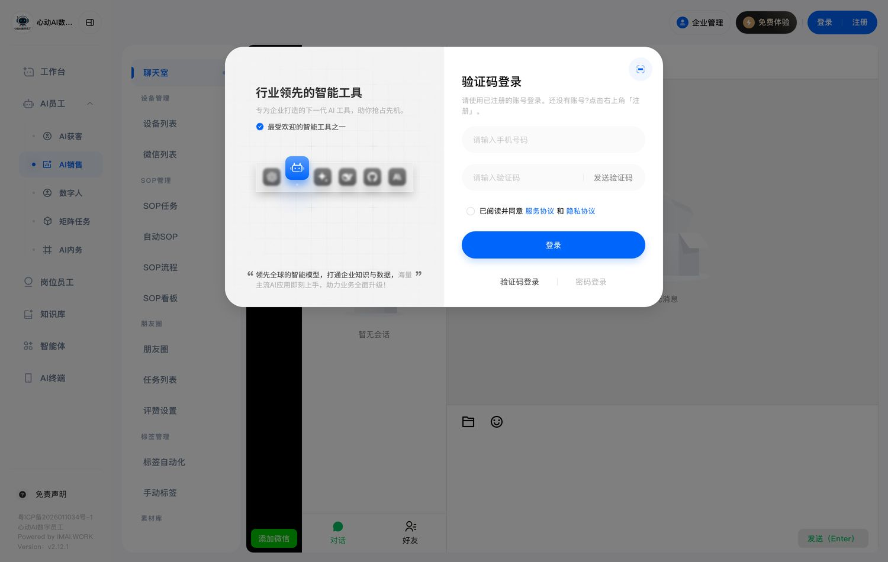
AI终端管理中枢 = 卡密授权制 实证
页面标题下写着"一键绑定跨平台设备，激活智能流程引擎"，右上角三个按钮：购买CDK / 我的CDK / 添加新设备。
设备表列：设备识别、型号/系统、AI自动 ⇄ 人工开关、实时状态（工作中）、绑定周期（2026-04-24 14:55:58）、授权状态（这台演示机是"永久有效"，旁边有"重置"按钮）。这套结构说明授权是按卡密卖的、可以是周/月/年/永久——和销售嘴里的"有周卡月卡年卡"对得上。
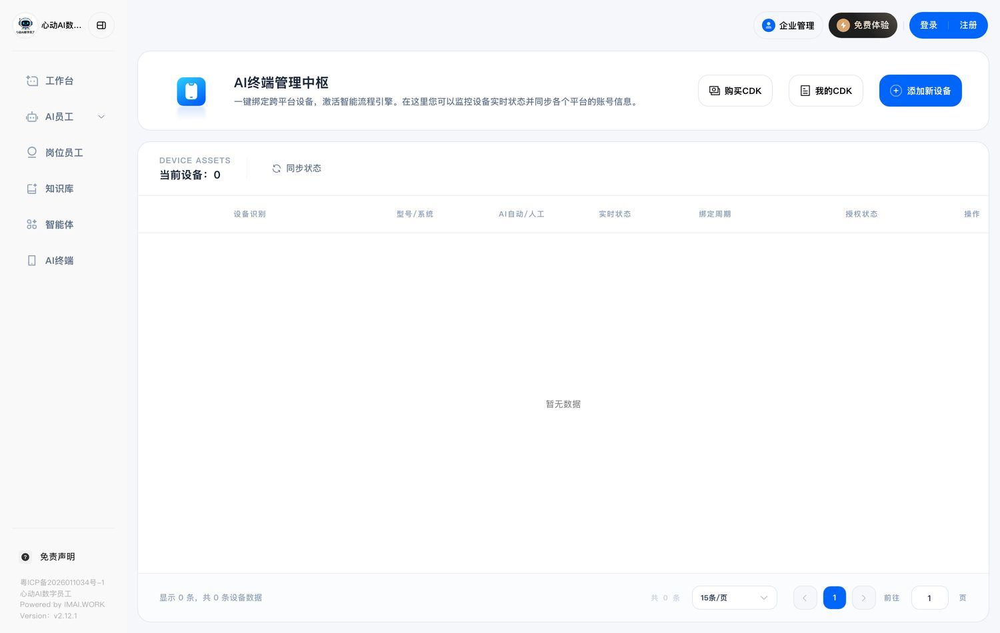
实证工作台的输入框上方并排五个工具：AI对话 / 图片创作 / PPT生成（NEW）/ 地图获客 / 视频生成（HOT）。演示时输入的是"东莞附近五金厂"。
它接的是高德地图，按类目（餐饮美食 / 咖啡奶茶 / 银行机构 / 医疗健康 / 酒店住宿 / 购物商场）抓本地商家的地址和注册电话。口径
对家装来说这条路的价值不大（找的是商家不是业主），但对做工装的有用——销售自己举的例子就是"你们做工装的话，很多餐饮店要装修，找这些老板都可以找"。
| 项目 | 手册宣称（34 页 PDF） | 演示实况（8月14日） | 差异 |
|---|---|---|---|
| 时段颗粒度 | 按小时排，如 10:00–11:40 | 10–30 分钟一段，可逐条开关 | 实况更碎，也更可控 |
| 抖音私信 | 35 个/天，2 分钟/个 | "每个匹配词截流上限 10"；补测：任务表单里另有每日执行次数（默认 15） | 口径仍对不上，但阀值控件已找齐（图 2） |
| 抖音评论 | 30 条/天，2 分钟/条 | 同上 | 待实测 |
| 微信加好友 | 15–20 个/天，10 分钟/个 | 补测：每日执行次数 15 + 间隔 10 分钟，是表单默认值 | 矛盾解除：10 分钟是间隔不是窗口，手册那行数字就是抄的默认值 |
| 并行能力 | 表格里同一时段列多个平台 | 串行排队，一时段一件事 | 手册的量是理想值 |
| 随机延迟 | 养号段写"随机 30–120 秒" | 补测：话术有随机库（五选一）；但执行间隔是固定值，没有随机抖动 | 半个答案。像不像真人取决于间隔，而间隔恰恰不随机 |
| 单轮实际耗时 | 未提 | 视频号获客 13 分 35 秒未出结果 | 首个真实耗时数据 |
| 来源 | 原话 | 怎么读 |
|---|---|---|
| 34 页手册 | "智能防风控 · 通过率高 · 合规模拟真人行为加微/互动不封号" | 九家里最激进的一句 |
| 8月14日会议 | "我们是合规的，通过工信部合法合规的，要符合平台规则……你不符合平台规则那肯定有被封的风险，但是我们这边是很少" | 从"不封"退到"很少"。而且"工信部合规"和"平台不封号"是两码事——工信部管的是备案和电信业务，不管抖音封不封你 |
| 它自己的界面 | 四个平台账号卡片下方标红字："封号风险：未实名" | 产品内部承认封号风险是存在的，还给出了一个诱因 |
| 会议里另一处 | "全部是广告也不行，还得手搓一点视频……现在流量说真的还不是很好，所以还是偶尔要手搓一下" | 自曝：全自动内容会被平台压，必须掺人工作品 |
零假设：如果"不封号"为真，那么同赛道做过同一件事的亿量不会因封号风险整条业务退出，黑谷也不会把"不能自动加微、要手动加"主动写进报价单。三家说的是同一件事，结论互斥，至少有一家是错的。
可证伪方式：要一份连续 30 天的账号存活率，外加一句"封了算谁的、换号谁出钱"。九家里到现在没有任何一家在材料里回答过第二问——谁先答清楚，谁就赢下这场沟通。
补充一条对我们有利的事实：心动界面上有"AI自动 ⇄ 人工"开关、有"接管范围：全部场景 / 仅限私聊"，说明连它自己也认为需要给人留一个刹车。这跟我们"人机混合、可降级人工"的设计是同一个方向，只是我们把刹车做进了流程（人审队列），它把刹车做成了一个开关。
这是本次最有商务价值的一节。08-10 报告里把心动记成"一次性硬件 5,800"，本次演示推翻了这个判断。
| 费用项 | 金额 | 来源 | 说明 |
|---|---|---|---|
| 整机 + 软件 | ¥5,800 / 台 | 口径 | 市场价标 8,800，现场价 5,800。含一台全新红米 |
| 其中手机成本 | ¥1,000–1,200 | 口径 | 销售主动说的采购价，市场价 1,300–1,400 |
| 算力（二次收费） | 约 ¥10/天 ≈ ¥300/月 ≈ ¥3,600/年 | 口径 | 视频生成、图片生成、AI 对话全部烧算力。演示账号余额显示 2,258.22 → 2,168.22，会议中就在掉 |
| 授权周期 | 周卡 / 月卡 / 年卡 | 口径 | "我们正常是一年的，按一年的价格卖给你"——不是买断 |
| 试用 | 无 | 口径 | "因为手机都是全新的……我们确定下来就直接就那个了，没有说试用"。只送 500 算力体验软件功能 |
对 20 家门店换算一下（这是要拿去跟甲方讲的数）
一台手机 = 一个员工，那 20 家店至少要 20 台。第一年：20 × 5,800 = 116,000，加上算力 20 × 3,600 = 72,000，第一年约 18.8 万。
第二年如果软件按年续（销售口径），成本不会明显下降。这个总额比今立进阶版 Pro（3.6 万）、黑谷（2.75 万）高一个量级，而它买到的是 20 台不能挪作他用的手机。九家横评里"心动 5,800 落在老板能当场拍板的区间"这个判断，只在买 1 台时成立。
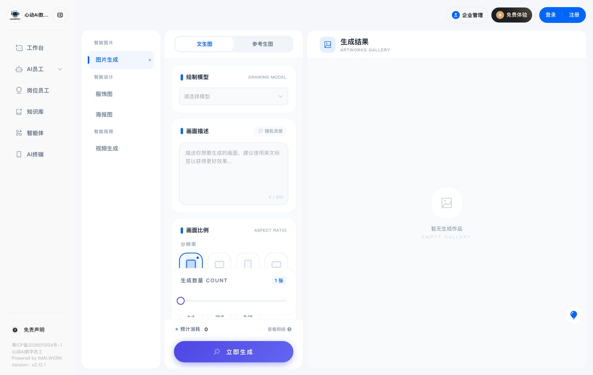
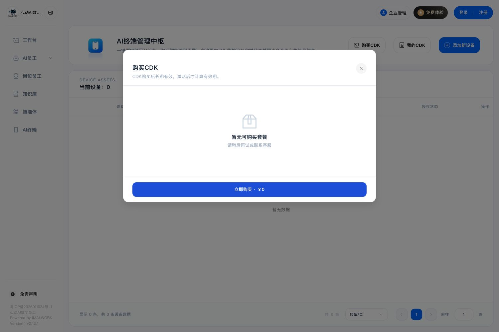
这一节是为试用准备的。先讲清楚它的六种模式和真实产出链路，再给一张验收清单。
| 模式 | 你要给什么 | 它产出什么 | 对家装的实际价值 |
|---|---|---|---|
| 一句话创作视频 | 一个主题或一句话 | 脚本 + 匹配素材 + 音乐 + 字幕 | 低。素材不是你店里的，出来的是通用货 |
| 数字人纯口播 | 克隆过的形象 + 文案 | 数字人对着镜头念 | 中。要先录授权视频克隆 |
| 数字人口播混剪 | 数字人 + 文案 + 素材 | 口播画面 + 素材穿插 + 字幕转场 | 中高。销售管这叫"画中画"，是他们主推的形态 |
| 真人口播混剪 | 你自己录的口播 + 素材 | 自动配素材、加字幕 | 高。这条最接近"像本店拍的" |
| 素材混剪神器 | 文案 + 多张素材 | 成品/户型解说/产品介绍 | 中高。家装的户型讲解适用 |
| 新闻体视频 | 素材 + 标题 + 音乐 | 新闻播报式短片 | 销售称"流量密码"，实为模板套壳 |
| 爆款一键复刻 | 一条抖音/小红书链接 | 拆结构 → 生成同款 | 要盯版权与同质化 |
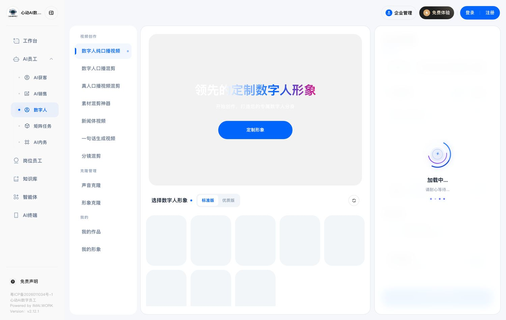
人设管理页上写着一行小字 实证
「每天 00:00–03:00 自动生成内容：AI 从词库中抽词 → 搜索各平台爆款 → 自动下载提取文案 → AI 分析结构 → 自动生成新内容」
说白了就是：半夜去别人家里搬爆款，改写完当自己的发出去。词库演示账号里有 50 个词（AI获客手机、实体商家获客、门店获客攻略……）。这套逻辑本身没有"你这家店有什么不一样"的位置——它解决的是产能，不解决真实性。这正是九家共同的空档。
试用时请重点验这 8 条
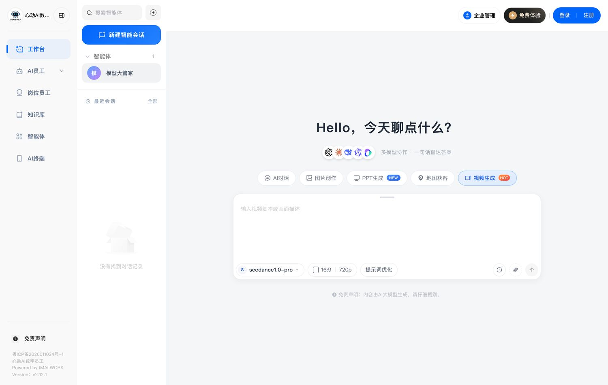
饭姐两版报告里反复挂着"心动无主体、无资质"。这次桌面泄露第一次给出了公司主体的线索。
公司主体（首次拿到）实证0.75
桌面文件名里反复出现：「安哥 | 广州芯动智能 AI…」「芯动智能AI数字员工 | 客…」「芯动AI数字员工百问百答…」
注意是"芯"动不是"心"动——品牌用"心动AI"，公司主体疑似广州芯动智能（全称待工商核实）。
网站底部：粤ICP备2026011034号-1、Powered by IMAI WORK、Version v2.12.1。备案是 2026 年新备的，公开检索（含企查查/天眼查/搜索引擎）目前查不到这家公司的任何公开信息。
① "AI自动 ⇄ 人工"一个开关，把责任边界讲清楚了
设备卡片上一个二选一开关，老板一眼看懂"现在是机器在干还是人在干"。我们云电脑那边目前是汇总视图，缺一个同等直白的状态表达。这是九家共同确认的品类入场券。
② "AI 工作中 00:03:36" 的常驻计时器
它在手机上挂了个悬浮窗，实时显示当前任务、阶段（初始化 → 采集中）和已耗时。这个设计比日志流更适合给老板看——它把"机器在干活"变成了一个可以随时瞟一眼的东西。反过来说，也正因为有这个计时器，我们才抓到"13 分钟没出结果"这条实测。做透明是双刃剑，但值得做。
③ 任务按"目标"分组，而不是按"功能"分组
它的小程序把任务归成四条流水线：帮我找爆款内容 / 全网自动发布 / 同行找客户 / 聊客户加微信。用的是老板的语言，不是产品经理的语言。我们的"短视频获客/企微自动接待/沉默客户跟进"其实也是这个思路，可以再往这个方向推一步。
实证屏幕上直接读到的字
来自 44 分钟录屏的逐帧截图（每分钟 1 帧共 41 帧 + 关键处放大）。包括后台菜单、设备表、配置项、任务流、桌面文件名。这一档最硬，但要注意看到的是销售自己那台演示机的状态，不是甲方装机后的状态。
口径销售在会上说的话
来自全程语音转写（本地 ASR，逐字稿约 3.7 万字）。销售自曝的短板（手机不能同时用、要手搓视频、流量不好）可信度较高——自曝短板没有动机说谎；宣传性表述（工信部合规、很少封号）需另行验证。
推断由证据组合推出的结论
每条都标了置信度，并尽量附上零假设和可证伪方式。最主要的一条是"无障碍服务 GUI 自动化"（0.80），依据是 adb + scrcpy + root 三件套加上锁机型这一事实。
| 此前的说法 | 本次证据 | 处理 |
|---|---|---|
| 心动是"一次性硬件 5,800"，落在老板能当场拍板的区间 | 销售明说"按一年的价格卖"，另有算力二次收费约 3,600/年 | 推翻。20 店首年约 18.8 万，不是小额支出 |
| 心动"手册无公司主体、无客户案例" | 桌面泄露"广州芯动智能"+ 10 行客户名单 + 家装案例数据 | 结案一半。主体待工商核实，客户可要求引荐 |
| "缺：任务是云端下发还是本机跑、亮屏要求、一账号带几台" | 小程序下发、本机跑、独占亮屏、演示账号带 1 台 | 结案。只剩"一账号最多带几台"待问 |
| 心动九家里"唯一宣称加微/互动不封号" | 会上口径退为"很少"，界面自标"封号风险：未实名" | 改写。宣称与实际口径已经分叉 |